- 駐車場完備
- 夜21時まで営業
- 初回施術1,980円(税込)
（株）メディカルブックジャパン認定講師より
推薦をいただきました！
RECOMEND
- 埼玉県日高市・狭山市
- 慢性腰痛専門整体院 六葉-rokuyo-
- 院長 菱川卓真さん
髙橋先生は、痛みで苦しむ地域の皆様に貢献したいと当セミナーを受講され、全課程を優秀な成績で修められた卒業生です。
セミナー中も来院されている患者様の症状について熱心に質問をされており、患者さん思いで信頼できる先生だなと感じました。必ず皆様の力になってくれるはずです。
MSMメソッドでは、
① 筋肉の硬さを徒手のみで取り除く（整体）
② サボっている筋肉を活性化させる（単一筋の運動）
③ 重力下でのトレーニング（複数の筋の連動）
を掛け合わせ、あらゆる痛み痺れを取り除き、さらに二度と再発させないことが可能です。
整形外科や整骨院、鍼灸等様々な治療ではその場で良くても全く根本的に改善しなかった患者様が驚異的な回復を遂げられている、今最も再現性の高い施術法として評価されています。
どこに行っても良くならないとお困りの方は、髙橋先生のお話を聞いてみられてはいかがでしょうか？
※個人の感想であり、成果を保証するものではありません。
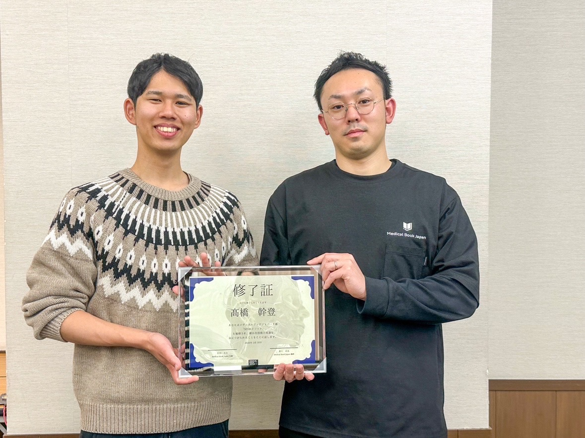あなたは腰痛でこんな辛いお悩みありませんか？
QUESTION
以下に1つでも当てはまるなら、Step Up 整体院がお役に立てます
- 10年以上痛みがある
- 自分で揉んだりしたが一向に良くならない
- 3件以上の整骨院に行ったが改善しない
- このまま歩けなくなってしまうのではと不安
- 運動しなさいと言われたが痛くて何もできない
- 寝返りをするたびに痛みで目が覚めてしまう
- 痛み止めを飲んでごまかしながら生活している
もしあなたが、上記の1つでも当てはまり悩んでいて、
本当に腰痛から解放されたいと思うなら、
当院は必ずあなたのお役に立てるはずです。
単刀直入に言います。
そのつらい腰痛を根本から改善しませんか？もし、あなたが上記のような症状で悩んでいて、少しでも今の状態からよくなりたい！と思っているならStep Up 整体院に来院してください。
それとは反対に、「どうせ口ばっかりでよくならないでしょ！」と思われるのであれば、今すぐこのページを消してください。でも、「相談するだけでも」と思いになられた方はそのままページをお進みください。
事実、当院にご来院された腰痛でお悩みだったお客様はこのような変化を手にしています。
当院の施術で改善されたお客様の喜びの声
VOICE
辛い症状で悩まれている方から多くの改善の声を頂くことができました。
このお客様の声はほんの一部ではありますが、きっとあなたと同じ悩みを抱えている方もいるのではないでしょうか？
そのような方が今では痛みを気にせず生活を送ることができています。それがほんの少しでも励みになれば嬉しく思います。
整体院に通うことも選択肢としてありだと思います！
40代 男性 腰痛
※個人の感想であり、成果を保証するものではありません。
改善の声を読む
- 来院いただく前にはどんな悩みがありましたか？
- 足の痛みがありました。
- その辛かったお悩みに対してどんなことをされていましたか？
- 自分なりに考えたトレーニングなどを行っていました。
- 他の整骨院や整体などに行ってどうでしたか？
- 他の整体院などには行っていません。
- カウンセリングはいかがでしたか？
- 相手の話をよく聞いてくださり素晴らしいと思います。
- 施術はいかがでしたか？
- 親切に施術をしていただき感謝しています。
- 同じ腰痛で悩んでいる方に向けて、何かメッセージをお願い致します。
- しっかり整体院に通うことも選択肢としてありだと思います。
健康になっていきましょう！
40代 女性 肩こり
※個人の感想であり、成果を保証するものではありません。
改善の声を読む
- 来院いただく前にはどんな悩みがありましたか？
- 肩こりが悩みでした。
- その辛かったお悩みに対してどんなことをされていましたか？
- 特には対処しておらずたまに市販の機械を使っていました。
- 他の整骨院や整体などに行ってどうでしたか？
- 以前行ったことがありますが側わんがあり背骨・腰の骨を整えてもらいましたがしばらく経つと元に戻っていました。
- カウンセリングはいかがでしたか？
- 側わんが改善すると分かり安心しました。また、気持ちの面でも症状が変わってくると知りこれから気をつけたいと思いました。
- 施術はいかがでしたか？
- その場の施術だけでなくどこの筋力を付けたらいいのか教えていただき背術も丁寧にしていただきました。
- 同じ腰痛で悩んでいる方に向けて、何かメッセージをお願い致します。
- 施術をしてもらいながら自分の体をいい方向に変えていきもっと健康になっていきたいと思います。皆さんも健康になっていきましょう！
継続は力なり！
60代 女性 肩こり
※個人の感想であり、成果を保証するものではありません。
改善の声を読む
- 来院いただく前にはどんな悩みがありましたか？
- 肩こりがあり頭が痛かったです。
- その辛かったお悩みに対してどんなことをされていましたか？
- 肩を回したりしていました。
- 他の整骨院や整体などに行ってどうでしたか？
- 通院した時は楽になりました。
- カウンセリングはいかがでしたか？
- 相談に対して優しくアドバイスをいただきました。
- 施術はいかがでしたか？
- 施術を受けた時は自宅でも頑張りたいと思いますが1週間経つとできておらず反省しています。その分痛みを和らげてもらっています。
- 同じ腰痛で悩んでいる方に向けて、何かメッセージをお願い致します。
- 初めは痛くてできなくて不安になると思いますが日々の積み重ねでです！継続は力なり！！
自ら改善！
20代 男性 腰の痛み、猫背
※個人の感想であり、成果を保証するものではありません。
改善の声を読む
- 来院いただく前にはどんな悩みがありましたか？
- 腰の痛みと猫背が気になっていました。
- その辛かったお悩みに対してどんなことをされていましたか？
- 背中を伸ばしたりストレッチをしていました。
- カウンセリングはいかがでしたか？
- なぜ痛みを取りたいのか、痛みを無くして何をしたいのかなど目的を明確に考えさせてくれました。
- 施術はいかがでしたか？
- その場だけの対策ではなく日常的にできるトレーニングや意識することを学び整体院に通わなくても体の悩みを解決できる施術をしてもらい良かったです。
- 同じ腰痛で悩んでいる方に向けて、何かメッセージをお願い致します。
- 他の整体院と違い痛みを無くすだけでなく自ら改善し二度と悩まないように教えてくれます！
もし痛みでお悩みなら、Step Up 整体院にお電話ください。
あなたも当院でその辛い症状を改善しませんか？
こんなことならもっと早くに施術を受けていればよかった・・・と多くのお客様に感謝いただいております。
まずは一度試してみてください。あなたの辛い痛みから解放するために私は最後まで努力いたします。
通常初回施術費10,000円のところ
初回限定特別価格1,980円(税込)
- 初回施術費
全額返金保証 - 徹底した
カウンセリング - 痛みを
根本から改善
[完全予約制]施術のご予約は今すぐお電話
- [受付時間]10時ー21時
- [定休日]不定休
※施術中は電話に出られませんので留守番電話にお名前と電話番号を伝言ください。すぐに折り返しいたします。
代表 高橋からのご挨拶
PROFILE
Step Up 整体院
代表 高橋 幹登
プロフィール
- ああああ
- ああああ
- ああああ
- ああああ
- ああああ
こんにちは、〇〇整体院の代表を務めております、〇〇 〇〇（氏名）と申します。
私はこれまで約◯年間、整体という分野に携わり、多くのお客様の体と真摯に向き合ってまいりました。もともと私がこの道に進んだきっかけは、学生時代にスポーツで怪我をした際、地元の整体師の方に助けていただいたことです。そのとき、ただ痛みを取ってもらうだけでなく、心まで軽くなるような施術に感動し、「自分も誰かの力になれる仕事がしたい」と思うようになりました。
当院では、単に痛みや不調を取り除くだけでなく、「なぜその不調が起こったのか」「どうすれば再発を防げるのか」といった根本原因の改善にも力を入れております。そのために、問診・検査・施術・セルフケアのご提案まで、一人ひとりに合わせた丁寧な対応を心がけています。
特に現代は、デスクワークやスマートフォンの使用などによって姿勢が悪化し、慢性的な肩こりや腰痛に悩まされる方が増えています。そんな方々が少しでも快適に、笑顔で毎日を過ごせるよう、私たちができる最大限のサポートをさせていただきたいと考えています。
お体に関するお悩みがありましたら、どんな些細なことでも構いません。どうぞお気軽にご相談ください。皆様とお会いできる日を、心より楽しみにしております。
Step Up 整体院で施術を受け、 あなたも我慢していた腰痛を改善しましょう！
当院が選ばれる7つの理由
REASON
なぜ当院の施術を受けた人は、腰痛が改善されていくのか？その秘密はここにあります。
-
理由1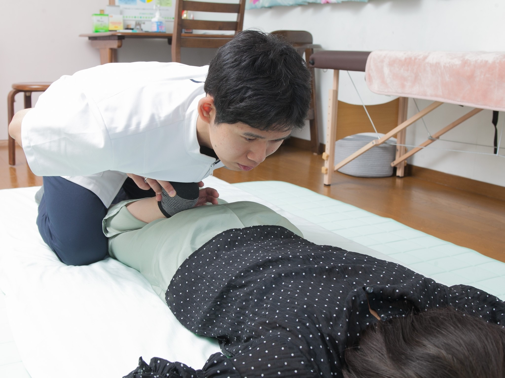
他のどこよりも的確にあなたの腰痛の「原因」をみつけることができるから
これが当院の他とは違う１番の強みであり、あなたの「腰痛」が改善する１番の要因です。 一般的な整骨院、整体院は腰に痛みがあれば腰を指圧して、腰を温め、電気をかけるだけ。痛いところを施術しても「その場しのぎ」で１日後にはまた戻ってしまいます。 これでは、あなたの腰痛を根本から改善することはできません。痛みという「結果」には、必ず「原因」があります。その「原因」をみつけ良くすることが改善につながってきます！ 私と一緒に腰痛の根本原因を見つけ、明るい未来を手にしましょう！
-
理由2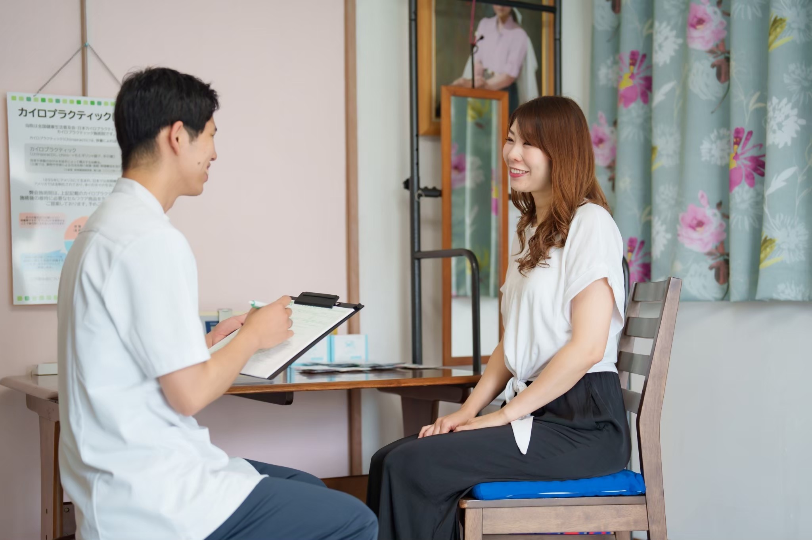
あなたの腰痛の原因に合わせた施術を提供できるから 根本改善に特化
何をやるのか？ではなくどこをやるのか？これが私の施術哲学です。 物事には【流行り】があります。筋膜リリース、背骨を揺らすだけでゆがみ痛みが取れる、小学生でもできるさわるだけ施術、ストレッチなど…それらの技術を否定はしません。 それらは果たしてあなたの腰痛の原因に合っているのでしょうか？腰痛の原因は１人１人違います。 その原因に合っている施術だからこそ最大限の改善結果を出すことができるのです。原因もわからないまま施術をしても何の意味もありません。
-
理由3
全国各地に足を運び、体の知識を深めているから
有名な医療の先生方とも、幅広く勉強させていただいています。
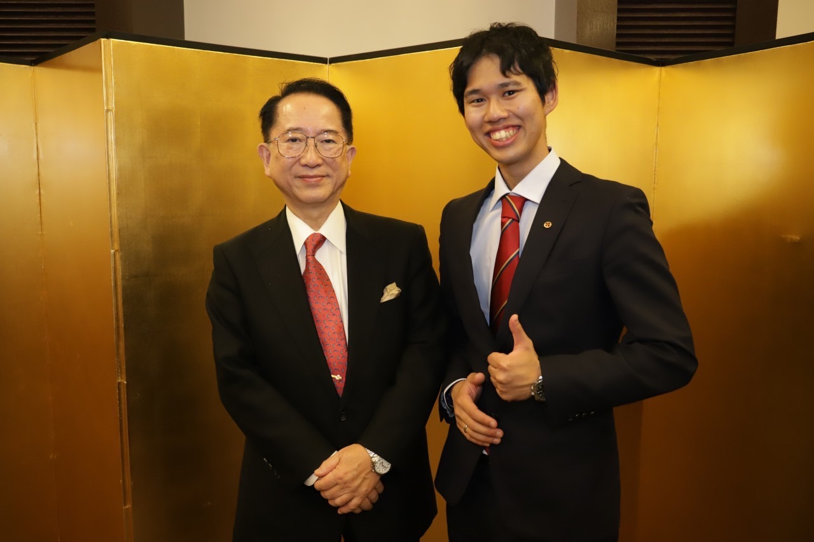小泉 英明 先生
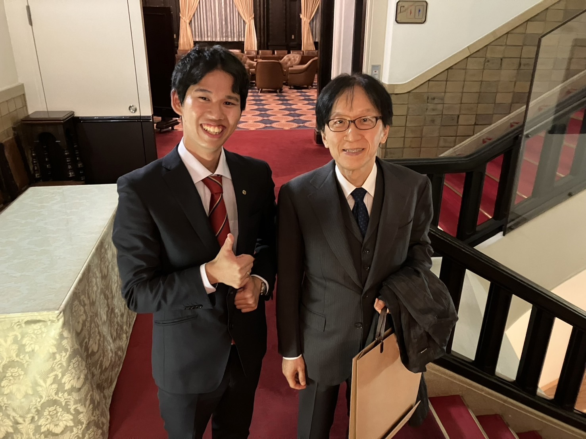高橋 孝雄 先生
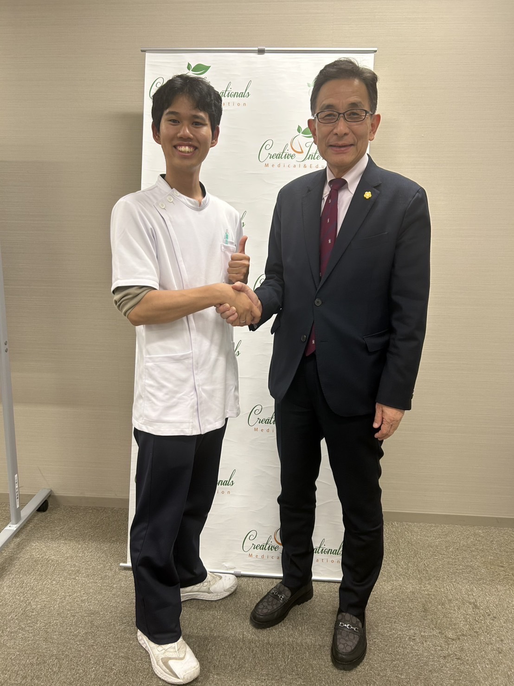新見 正則 先生
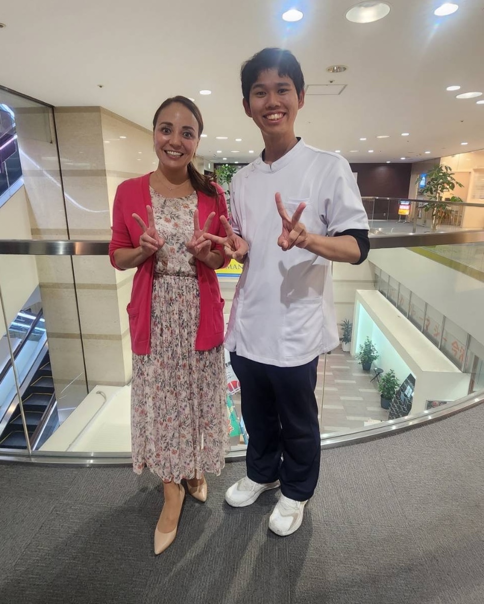石原 新菜 先生
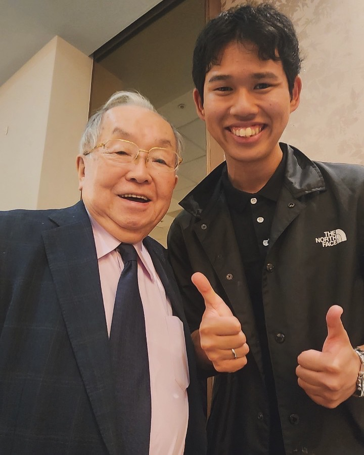帯津 良一 先生

代表 高橋は知識習得を怠りません。全国各地の有名な医療の先生方の講義などに参加し日々勉強をしております。知識・技術に終わりはない。これでいいやと諦めるなら勉強はしません。 自分の知識、技術を高めて発揮するのがプロとして当然のことだと思っています。私は生涯知識と技術を磨いていく覚悟を持って日々精進しています。
-
理由4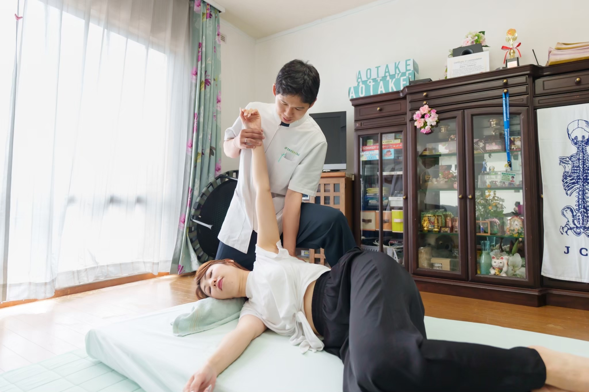
あなたに合ったセルフケアを毎回必ずお伝えするから
何をやるのかではなくどこをやるのか？ セルフケアも同じです。原因を改善するセルフケアだからこそ改善結果が現れてきます。1個の筋肉を緩めるにしても、指圧、ストレッチ、筋膜リリースなど、すべて結果が違ってきます。なので、当院ではあなたに今必要なセルフケアをお伝え致します！ さらに当院では、YouTubeなどの動画や画像でのセルフケアをお伝えしています。あなたに必要なセルフケアを動画や画像にて分かりやすくお伝え致します。それによりあなたはセルフケアを間違えることや、やり方を忘れてしまうことはなくなります！ もちろんマンツーマンでの直接指導も行います。こちらが実際のセルフケア画像です。
-
理由5
完全予約、完全個室での施術で、他に気を使わなくていいから

ほとんどの整骨院、リハビリ室は共用スペースでカーテン1枚あるだけ。悩みや不安など個人のことを話したいけど誰に聞かれているかわからない…という経験はないでしょうか？ Step Up 整体院では話しやすい環境を提供できるように完全個室で1対1の施術空間を作りました。 心も体もリラックスして施術を受けていただける環境作りを心がけております。
-
理由6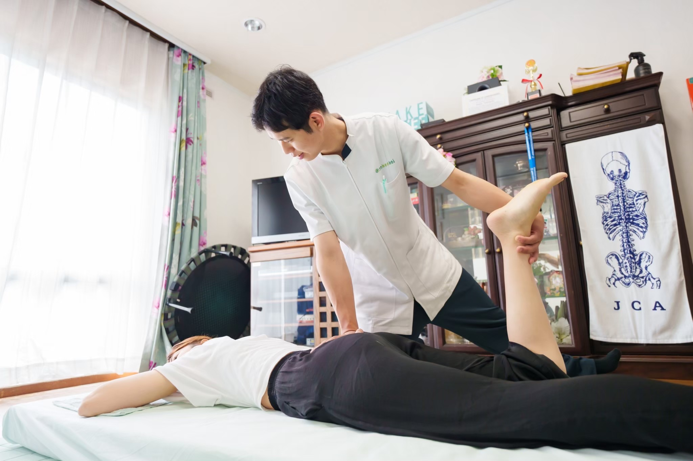
高い再発防止率を誇るから
腰痛の改善は当たり前ですが、繰り返しては意味がありません。時間とお金が無駄になります。そしてあなたにもう2度と「あの辛い」思いをして欲しくありません。 そのため当院では、痛みが繰り返さないようにご自身がご自宅でできるセルフケア指導を行い改善した後、痛みが繰り返し出ないように予防にも力を入れています。もちろん施術を終了した後のご質問、アドバイスなどもご提案致します。
-
理由7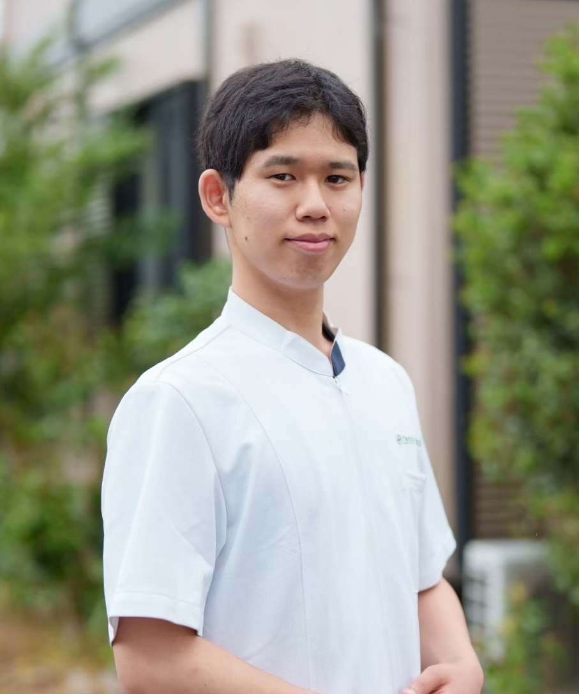
完全担当制で最後まで責任を持って担当させてもらうから
ほとんどの整骨院、整体院では担当がおらず、いろんなスタッフがその日その日で変わったり、スタッフの技術に差があったりします。 「また同じ説明をするのか」「今日はこの先生か…」という思いをしてほしくありません。 最後まで責任を持って施術に入らせていただきます。
当院の施術の流れ
FLOW
整体院 Step Upでの施術の流れをご紹介致します。
施術時間
- [初回]約90分〜120分
(初回は施術前に痛みの原因を調べるために、カウンセリングや検査を行います) - [2回目以降]約20分〜30分
-
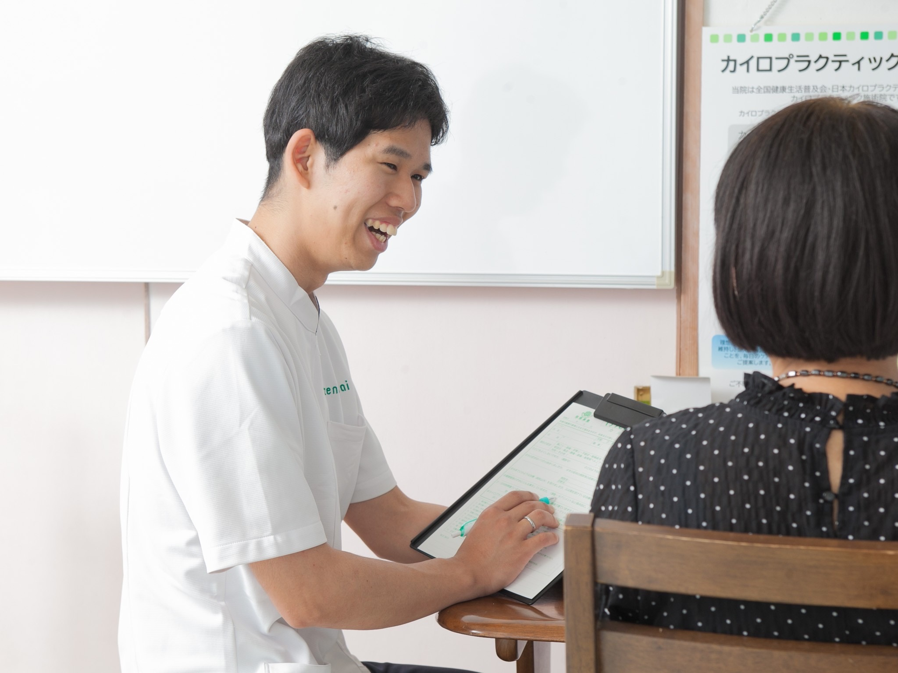
1カウンセリング
まずはあなたのお身体の状態の把握するための当院独自のカウンセリングをします。その後、腰痛について「いつ、どこが、どのようにして痛むのか」を詳しくお伺いします。
ご不明な点や気になることがありましたらどんな些細なことでもお聞きください。 -

2身体の状態の検査
カウンセリングでの内容をもとに、痛みの原因を検査して見つけていきます。どのような動作で痛みがあるのか、身体の動き、バランスなどを調べます。 しっかりと検査を行い、あなたの腰になぜ痛みがあるのか、原因はどこなのか、どのようにしたら腰痛を取り除くことができるのか、このように検査の結果をお伝えさせていただきます。 この過程であなたの【腰痛】の本当の原因を見つけ出します。
-
3施術方針の説明
あなたのお身体が今どういう状態になっているのかを細かく説明致します。骨盤の傾き、立ち姿、これがどのようにして腰痛を引き起こしてしまうのかなどをお伝えします。 あなたがきちんと理解していただけるまでお伝えします。それに伴い、今後の通院ペース、期間についてお伝えします。
-
4施術開始
バキバキならしたり、強く押したりはしません。優しく丁寧に一つ一つ確認しながら施術を行います。どんな方でも安心して受けていただけます。 痛みに敏感な方でも安心して受けていただけます。
-
5施術後の確認・アドバイス
施術前に行った検査をもう一度行い、施術前と施術後の身体の変化を確認致します。あなたの体に必要なこと、普段の生活で意識してもらいたいこと、やっていただきたいことをお伝え致します。 そしてあなたが普段疑問に感じること、悩んでいることをすべてお話してください。
-
6施術終了
お支払い・次回予約をしていただき終了になります。 もし、施術や日常生活のことで気になることがありましたら、お気軽にご連絡ください。
私は岐阜にある、どの病院、整骨院、整体院よりもあなたの腰痛を理解し、
丁寧な施術で腰痛がない生活を送っていただくことを目標に施術しております。
施術料金について
PRICE
Step Up 整体院の施術料金は以下のようになっておリます。
通常施術費用
- 初回
- 10,000円
- (税込)
- ※施術費/当院は所見料をいただいておりません
- 2回目以降
- 10,000円
- (税込)
- ※施術費
当院では時間をかけて徹底的に痛みを改善させるために施術をするため、上記の料金で提供させて頂いております。
しかしちょっと待ってください！
当院から”あなただけ”に特別なご提案があります！
今なら辛い腰痛を改善したい方！先着３名様限定割引！

- 通常初回施術費10,000円のところ
- 初回特別価格（80%OFF）
- １，９８０円
- （税込）
- で施術させていただきます！
予約多数のため初回限定割引は6月30日まで先着3名様限定割引
- ※先着3名様限定割引 以降のご予約は、通常初回施術費である10,000円（税込）となります。
- ※限定価格は初回のみです。来院２回目以降の施術費用は１回につき10,000円（税込）となります。
- ※現在、大変予約状況が混みあっております。そのため、新規の予約受付人数を限定させていただいております。
ご理解、ご協力宜しくお願い致します。
なぜ初回の施術費は1,980円（税込）なのか？
それはあなたにまた「同じ過ち」を繰り返してほしくないからです。私はあなたにこれ以上、整骨院・鍼灸院・マッサージ店・整体院に行くのをやめていただきたいです。
あなたは“改善結果のない施術”にいつまで貴重な時間とお金を使うのですか？あなたに、そのつらい腰痛でこの先ずと悩み続けて欲しくないです。
私は誰よりもあなたと向き合います。あなたの悩みを私に聞かせてください。あなたの腰痛を改善するために全力で施術致します。本気で腰痛を改善したいと思われる方は今すぐ連絡ください。
初回施術費の全額返金保証付き
GUARANTEE
当院の施術で症状が改善されなかった方には初回施術費を全額返金致します。
あなたにリスクはありません。

ここまで聞いてまだ疑問・不安があるあなたへ、初回でもし効果が実感できなければ施術費全額返金致します。
本巣市には多くの接骨・整骨院、整体院があり、その中でも自分の身体を任せていい所なのかどうか見極めるのは難しいと思います。行ってみた結果、「ここは私の思っている感じと違うな…」と思われる方もいらっしゃるかもしれません。
私は、これまでに多くの慢性腰痛で悩まれる方たちと携わってきました。それに加え、多くの勉強会やセミナーに参加し確かな技術を磨き、今までの経験から培ってきた施術技術でどうしても「効果があまり感じられない…」と感じたのなら、初回の施術が終わった時点でお伝えください。
１ｍｍも痛みが改善しなければ、その場で施術費を全額返金致します。
私は効果を実感してもらえない方から施術費用を頂くことはしません。あなたが「ここなら安心して身体を任せられる！根本から改善してもらえる！」と思った時点で施術費用をお支払いください。
来院前に以下の点をご確認ください
CHECK
当院に向いている人・向いていない人
- こんな方は向いていません
- マッサージやリラクゼーションほぐしてもらいたい方
- その場での痛みが取れればいいと思っている方
- 自分の体にお金を投資できない方
- 説明を聞かず施術のみを受けたい方
- お伝えしたセルフケアを実際に行えない方
- 当日キャンセルをする方や予約時間を守れない方
- 以下のようなお客様が通っておられます
- 健康意識が高く、何とかならないかと本気で考えている方
- 私のアドバイス通りに通院していただける方
- お伝えしたセルフケアを行っていただける方
- 自分の体に時間とお金を投資できる方
- 予約時間を守ることができる方
このように本当に改善したいという意欲の高いお客様と2人3脚で慢性腰痛の改善を目指していきます。私は、すぐに痛みが戻るような中途半端な施術やある程度痛みが取れればいいとは１ミリも思っていません。私は１人でも多くの慢性腰痛で苦しむお客様を助けたい一心で１人１人本気で向き合っています。
よって、上記のお約束を守っていただける方には徹底的にサポートさせていただきます！まずは勇気を出して一度来院してみてください。もちろん１回の施術では痛みを完全に取りきることができないかもしれません。しかし、通院をすると決断されるということは、それ以上慢性腰痛がひどくなることはありません。
何回か来院した後に、必ずそれよりも痛みが軽減しているはずです。多くの人は、その第一歩をずっと先延ばしにしたままで、結局慢性腰痛に悩まされている生活を送ってしまっています。
あなたもこのまま辛い慢性腰痛のままこの先の人生を過ごしますか？
私はあなたの不安をすべて取り除きます。「慢性腰痛を取り除き今後慢性腰痛に悩まされることのない人生を送りたい！」という慢性腰痛持ちのあなたのご来院を心よりお待ちしています。一緒に頑張っていきましょう！
当院までの来院経路
ACCESS
Step Up 整体院は「モレラ岐阜駅」が最寄りになります。徒歩10分。
Step Up 整体院はお車での来院が便利です。
- 住所
- 〒501-0406
- 岐阜県本巣市三橋2-56
- 電車でお越しの場合
- 樽見鉄道「モレラ岐阜駅」より徒歩10分
- お車でお越しの場合
- 3台止められる駐車場を完備しております。
-
※ご注意ください！
お車でお越しの場合、一本道を入った所にございますので場所がわからない場合はお電話ください。
よくある質問
Q & A
当院に寄せられるよくある質問をまとめました。
Q.施術時間は何分ですか？
20〜30分程度みてもらえば大丈夫です。初回はカウンセリングや検査、説明になりますので、90分〜120分程みていただければ大丈夫です。
Q.どんな施術を行いますか？
バキバキ鳴らしたり、ぐりぐり指圧したりするような施術ではなく、筋肉・筋膜にアプローチしたソフトな整体です。心地よい施術ですので安心して受けていただけます。
Q.腰痛以外でも受けられますか？
首・肩の痛み、膝の痛み、手足の痛みはもちろん、産後のケア、めまい、頭痛なども施術可能です。
Q.高齢でも受けられますか？
当院の慢性腰痛のお客様の大多数が60代以上です。ご安心してご来院ください。
Q.予約制ですか？
当院は完全予約制です。予約の5分前にお越しください。ご予約前後の時間にも他のお客様がいらっしゃいますのでご注意ください。遅刻しそうな場合は必ずご連絡していただきますようお願い致します。
Q.服装は？
動きやすい服装なら大丈夫です。デニムなど伸びにくい素材はお控えください。
Q.健康保険は使えますか？
使えません。当院では施術技術を高く保つため、すべて自費診療とさせていただいております。
Q.症状の相談はできますか？
電話でのご相談は無料にてお受けいたしますのでお気軽にご相談ください。
Q.クレジットカードは使えますか？
VISA・Mastercard・AmericanExpress・JCBなどご利用可能です。
最後に・・・あなたには3つの道があります
3WAY
本気で辛い症状を改善したいあなたはどの道を選びますか？
- 1つ目は、
- このまま慢性腰痛を我慢して生きていく道。
- 2つ目は、
- 「その場しのぎ」や、根本改善ができない接骨院、整体に通い、無駄なお金と時間を使いいつまでも通い続けなければいけない道。
- 3つ目は、
- あなたのお悩みに全身全霊でぶつかってくれる、Step Up 整体院に通院し、もう二度とその慢性腰痛を我慢することのない人生を手に入れる道。
どれを選ぶのもあなたの自由です。しかしよく考えてください。
このまま残りの何十年もその痛みを耐えながら生きていくのですか？
もし嫌だ！と思ったのなら、今すぐStep Up 整体院へお電話ください！私はあなたを真正面から受け止めます！！